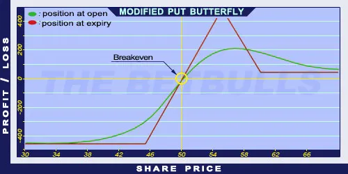

Description and use
Modified Put Butterfly is similar to Long Put Butterfly, but the difference between the strike of the middle Call and the higher Long Call is smaller than the difference between the strike of the lower Call and the other middle Call. This strategy is very similar to the Modified Call Butterfly. The profit is maximised when the share price closes close to the middle components’ strike price. This strategy requires the investor to pay close attention to details. To establish the position, the trader needs to have a lower strike Long Put, two middle ATM Short Puts, and higher strike OTM Long Put in the portfolio. The investor can profit from increasing share prices or the share prices moving within given limits. Despite the attractive risk/profit ratio, the maximum profit is limited. The direction of the market is neutral or moderately increasing. The expected profit is relatively high, given the low costs. The duration of the investment is one month or less.
- Type: Neutral, Bullish
- Transaction type: Credit
- Maximum profit: Limited
- Maximum loss: Limited
- Strategy: Neutral strategy
Opening the Position
Modified Put Butterfly Option Positions
- Buy a lower strike (OTM) Put option.
- Sell two middle (ATM) Put options.
- Buy a higher strike (ITM) Put option.
All components must have the same expiration and only Put options are used. The difference between consecutive strike prices must be equal.
Steps
Entry:
- Make sure the share prices are moving within certain limits.
Exit:
- The position can be closed only before maturity.
Basic Characteristics
- Maximum loss: (Middle strike price – Lower strike price) - (Higher strike price - Middle strike prices) - Net Credit.
- Maximum profit: Higher strike price - Lower strike price + Net debit.
- Time decay: Time decay has a positive effect on the value when the position is profitable, and a negative effect when the position is lossmaking.
- Breakeven point: Low strike price + Maximum loss.
Advantages and Disadvantages
Advantages:
- The investor can profit from share prices moving within given limits.
- Low costs.
- Relatively high risk/profit ratio.
Disadvantages:
- Potentially higher profit is only possible close to expiration.
- Limited profit.
Closing the Position
Buy back the Short Puts and sell the Long Puts.
Mitigation of Losses
Close the position the above-mentioned way.
Example

Modified Put Butterfly strategy example with ABCD traded for $50.00 on 17.05.2017. The investor engages in the following:
- Buy a Long Put option with a strike price of $45.00, expiring in June 2017, for a premium of $0.98.
- Sell two Short Put options with a strike price of $55.00, expiring in June 2017, for a premium of $6.12 each.
- Buy another Long Put option with a strike price of $60.00, expiring in June 2017, for a premium of $10.28.
- Net Credit: $0.98
- Maximum loss: $4.02
- Maximum profit: $5.98
- Temporary risk/profit: $0.98
- Breakeven point: $49.02